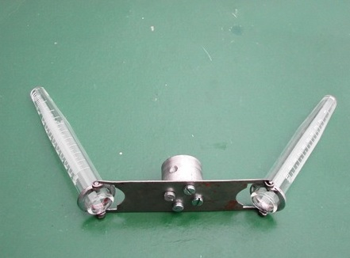
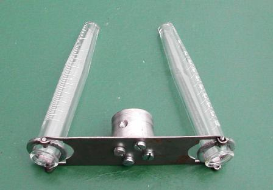

Vedendo la mia centrifughina autocostruita mi è venuta nostalgia di quei bei problemi di fisica che si facevano una volta.
(Spero proprio che non abbiano fatto la fine di storia e geografia...).
Ecco l'immagine del braccetto della centrifuga, costruita in un momento quando di necessità occorreva far virtù.


Fare l'attrezzo in teoria è semplice, ma è pacifico che occorre, oltre alla opportuna manualità, anche una officinetta attrezzata con gli strumenti che servono; per me nulla è più impagabile (ed usato) di quel laboratorietto meccanico che sta in quella piccola costruzione incoronata da quella superba rosa rampicante come s'è visto qualche anno fa (link) e che anche adesso è fiorita così.
Quando recentemente ho dovuto centrifugare l'idrossido ferrico per separarlo dal complesso rameico mi sono chiesto a quanti G di accelerazione fosse sottoposta una particella di quel gelatinoso idrossido per essere proiettata sul fondo della provetta anzichè rimanere in eterno sospesa nel liquido.
E già che ci siamo, a che forza sono sottoposti gli anelli che reggono le provette?
Ho fatto due calcoli ed ecco il risultato:
Il braccio della centrifuga (R), dal perno all'anello portaprovette, è lungo 5 cm (0,05 m)
Il braccio dal perno a metà della provetta (simuliamo che la particella da centrifugare sia lì) è lungo 9,5 cm (0,095 m)
La massa (m) della provetta (piena di liquido) è 24 g (0,024 Kg)
La massa della ipotetica particella assumiamo che sia 0,1 mg (10-7 Kg) - Il valore assoluto non è importante
La velocità di rotazione del motore assumiamola molto verosimilmente a 1000 giri/min (f = 16,66)
La formuletta della forza centripeta (il mio attrezzo sente la forza centripeta, non quella centrifuga! Quest'ultima riguarda la particella) è la seguente:
F = 4 ∏2 f2 R m
Dunque sostituendo si ha per la particella:
F = 39,478 * 277,77 * 0,095 * 10-7 = 1,04*10-4 N pari a 10,6 mg
La particella sottoposta ad una accelerazione per oltre cento volte il suo peso, dice: meglio che mi schiacci verso il fondo!
Notare che man mano che la particella "precipita" essa si allontana dal centro di rotazione e quindi la forza che la "tira giù" va sempre più aumentando fino a raggiungere il fondo della provetta.
[La centrifuga degli astronauti arriva ad un massimo di 10 G (e mi vien male solo a pensarci).
Qui siamo a 100 G e oltre (e meno male che non sono la particella...)].
Per l'anello della centrifuga:
F = 39,478 * 277,77 * 0,05 * 0,024 = 13,16 N pari a 1342 grammi
Ecco perchè l'accrocco deve avere la giusta robustezza e soprattutto deve essere perfettamente bilanciato, altrimenti dopo un po', se qualcosa entra in risonanza, si spacca tutto!
Tenere presente che la forza centripeta varia col quadrato della frequenza quindi aumentando la velocità di rotazione si intuisce (in questo caso intuisco bene io osservando preoccupanti vibrazioni) che non è il caso di accelerare più di tanto ma semmai di aspettare un minuto in più, tanto quello che deve precipitare precipiterà.
(Aumentando a 1800 giri la forza su ogni anello portaprovette passerebbe a 4350 grammi, e il tutto in vorticosa rotazione!)
Per questo ho munito il motore della centrifuga di un semplice variatore a TRIAC che permette di partire anche da zero e poi accelerare a piacere entro limiti di sicurezza.
Naturalmente questi problemucci riguardano i lab ruspanti, chi ha LA MEGACENTRIFUGA di buona marca non si pone questi pensieri, deve solo attaccare la spina.
Ora, sarà venuta a qualche curioso (...) la voglia di quantizzare "l'asciugatura" di una foglia d'insalata nella centrifuga da cucina?